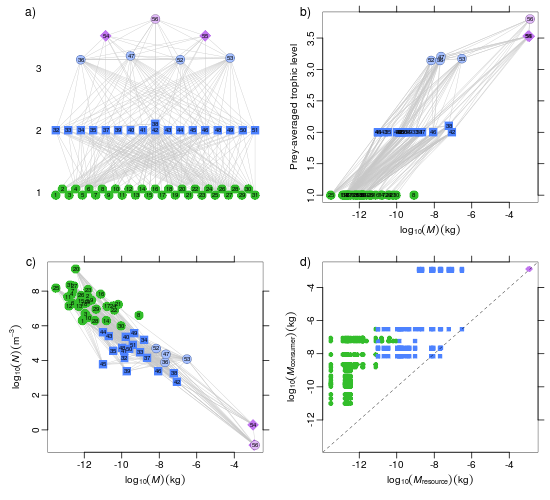

Analysis and visualisation of ecological communities in R
You can download the current release (0.1-607) of Cheddar for your system and install it in the usual way.
Cheddar contains unit tests, help files and vignettes. Please give it a go and send questions, comments or other feedback to me (lawrence.hudson08 (at) imperial.ac.uk), or use the issue tracker. Stable releases will be submitted to CRAN.
Cheddar is a R package for food-web ecologists. It provides
Cheddar has a comprehensive set of PDF vignettes to get you started.
library(cheddar)
vignette('CheddarQuickstart')
vignette('Community') # Collections of communities
vignette('Plots') # Cheddar's plots
vignette('Collections') # Working with communities
vignette('TriTrophic') # Tri-trophic statistics
vignette('ImportExport') # Importing and exporting data
If you are interested in simulating community dynamics, have a look at the Gruyere package.
Six different views of the dataset from Tuesday Lake, Michigan, USA, sampled in 1984 (Carpenter & Kitchell 1996; Cohen et al 2003; Jonsson et al, 2005). This community contains 50 species and over 250 feeding relationships.
a) shows nodes stacked vertically by prey-averaged trophic level (Williams & Martinez, 2004), b) shows an overview of web complexity, c) shows log-transformed numerical abundance (N, individuals per metre cubed) against body mass, d) shows trophic level against log-transformed body mass (M, kg), e) shows the predation matrix and f) shows log-transformed body mass of the consumer against that of the resource. a)-d) shows a point for each species and e)-f) show a point for feeding relationship. Primary producers shown by green circles, invertebrates by blue squares and vertebrates by purple diamonds. Cannibals are shown by lighter-coloured circles.
The R code that generated this image.